-
verifyingProcessorSpeedFilterFunctionality_Mobile_19-44-20
7:44:33 PM / 00:10:46:437 Fail
verifyingProcessorSpeedFilterFunctionality_Mobile_19-44-20
10.17.2026 7:44:33 PM 10.17.2026 7:55:19 PM 00:10:46:437 · #test-id=1Status Timestamp Details Info 7:44:33 PM Test Input Parameter: Mobile Fail 7:55:19 PM Info 7:55:19 PM 📂 Logs: Info 7:55:19 PM 📄 verifyingProcessorSpeedFilterFunctionality_Mobile_19-44-20.log Info 7:55:19 PM 📸 Screenshots: Info 7:55:19 PM 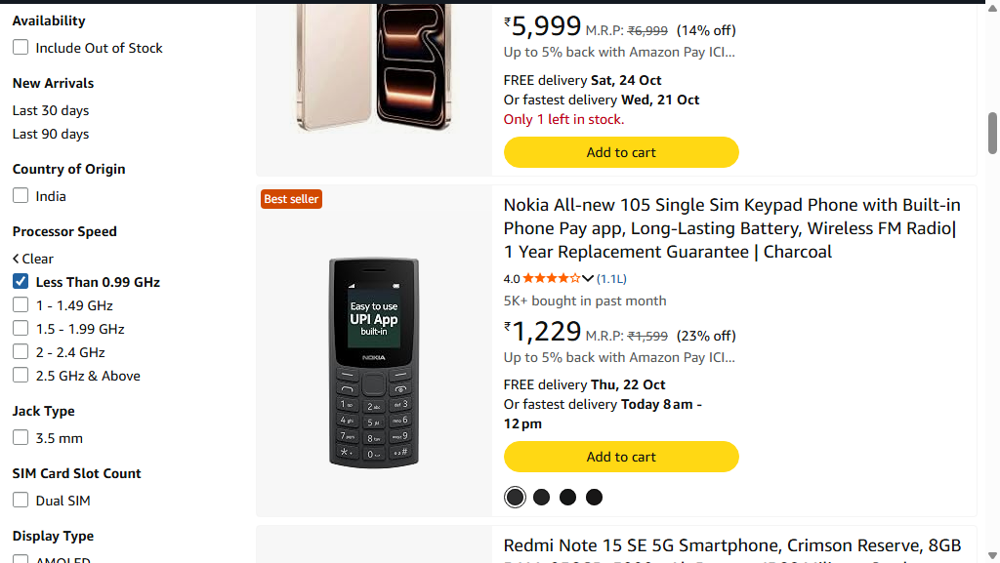
Info 7:55:19 PM 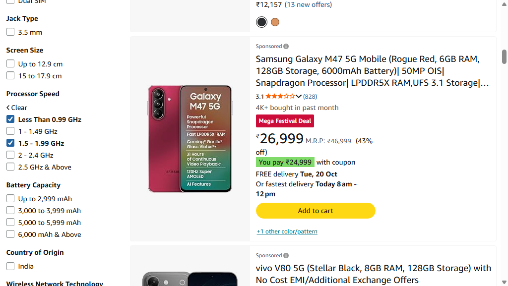
Info 7:55:19 PM 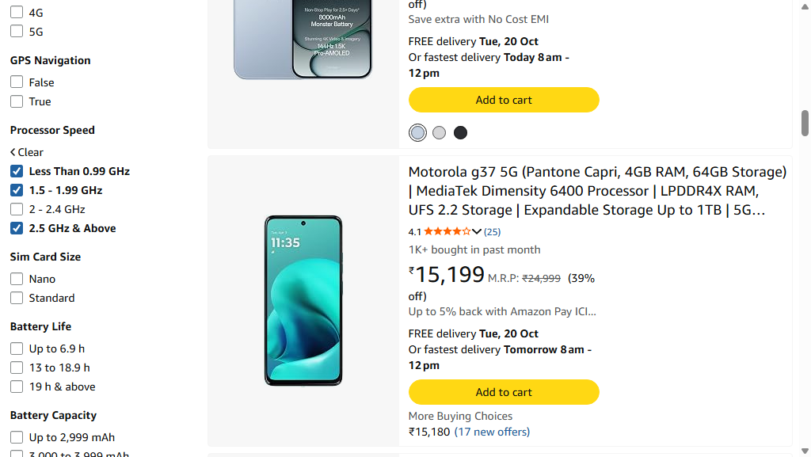
-
verifyingBatteryCapacityFilterFunctionality_Mobile_19-44-20
7:44:33 PM / 00:10:42:837 Fail
verifyingBatteryCapacityFilterFunctionality_Mobile_19-44-20
10.17.2026 7:44:33 PM 10.17.2026 7:55:16 PM 00:10:42:837 · #test-id=2Status Timestamp Details Info 7:44:33 PM Test Input Parameter: Mobile Fail 7:55:16 PM Info 7:55:16 PM 📂 Logs: Info 7:55:16 PM 📄 verifyingBatteryCapacityFilterFunctionality_Mobile_19-44-20.log Info 7:55:16 PM 📸 Screenshots: Info 7:55:16 PM 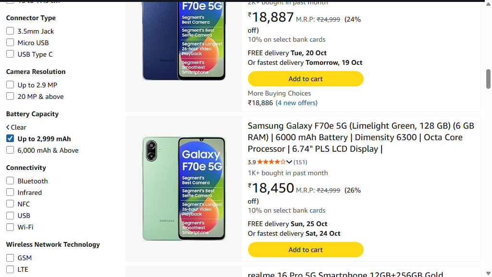
Info 7:55:16 PM 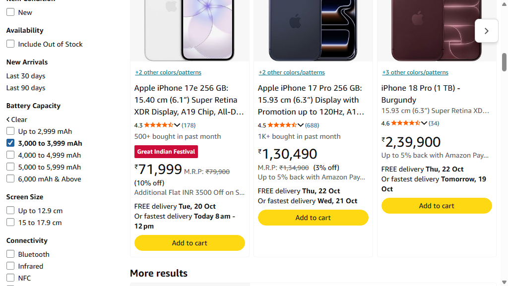
Info 7:55:16 PM 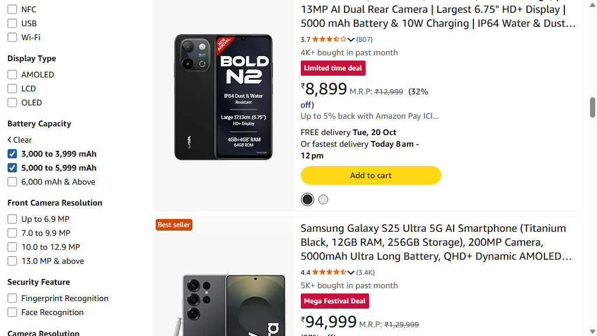
-
verifyingDiscountFilterFunctionality_Mobile_19-44-20
7:44:34 PM / 00:11:28:729 Fail
verifyingDiscountFilterFunctionality_Mobile_19-44-20
10.17.2026 7:44:34 PM 10.17.2026 7:56:03 PM 00:11:28:729 · #test-id=3Status Timestamp Details Info 7:44:34 PM Test Input Parameter: Mobile Fail 7:56:03 PM Info 7:56:03 PM 📂 Logs: Info 7:56:03 PM 📄 verifyingDiscountFilterFunctionality_Mobile_19-44-20.log Info 7:56:03 PM 📸 Screenshots: Info 7:56:03 PM 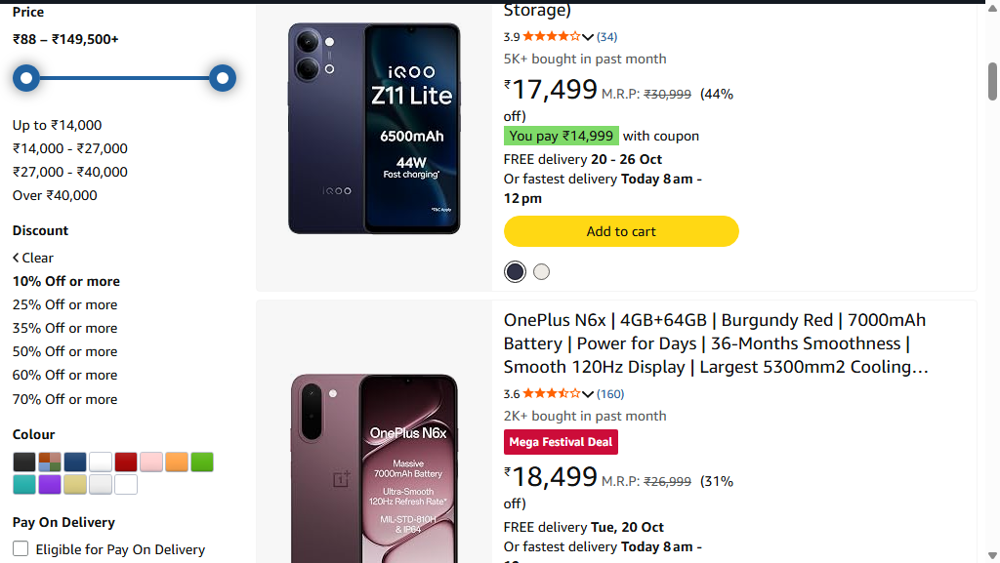
Info 7:56:03 PM 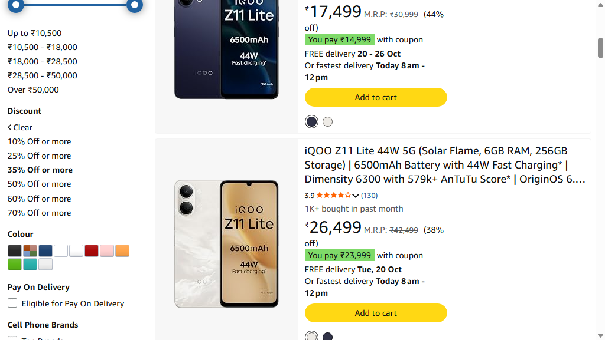
Info 7:56:03 PM 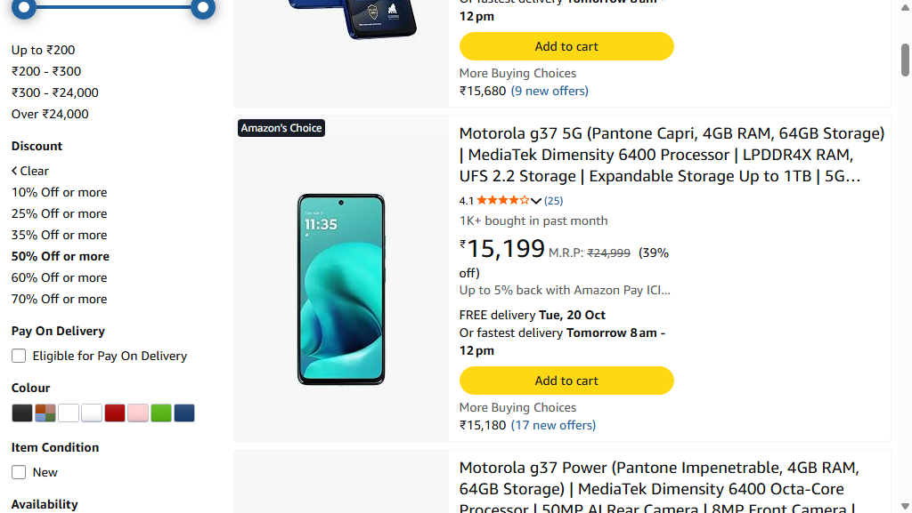
Info 7:56:03 PM 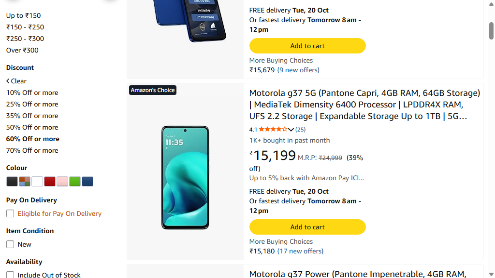
Info 7:56:03 PM 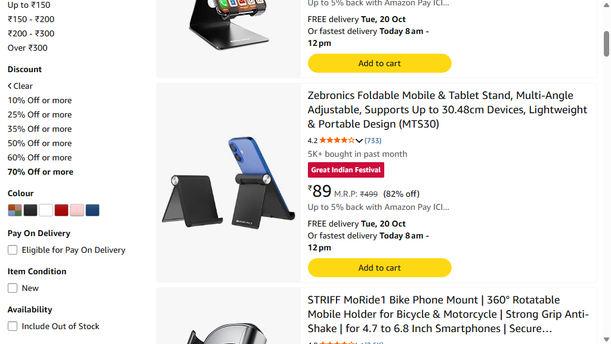
-
verifyingBatteryCapacityFilterFunctionality_Laptop_19-55-18
7:55:21 PM / 00:00:10:609 Pass
verifyingBatteryCapacityFilterFunctionality_Laptop_19-55-18
10.17.2026 7:55:21 PM 10.17.2026 7:55:32 PM 00:00:10:609 · #test-id=4Status Timestamp Details Info 7:55:21 PM Test Input Parameter: Laptop Pass 7:55:32 PM Test Passed Info 7:55:32 PM 📂 Logs: Info 7:55:32 PM 📄 verifyingBatteryCapacityFilterFunctionality_Laptop_19-55-18.log -
verifyingProcessorSpeedFilterFunctionality_Laptop_19-55-22
7:55:24 PM / 00:11:59:438 Fail
verifyingProcessorSpeedFilterFunctionality_Laptop_19-55-22
10.17.2026 7:55:24 PM 10.17.2026 8:07:24 PM 00:11:59:438 · #test-id=5Status Timestamp Details Info 7:55:24 PM Test Input Parameter: Laptop Fail 8:07:23 PM Info 8:07:24 PM 📂 Logs: Info 8:07:24 PM 📄 verifyingProcessorSpeedFilterFunctionality_Laptop_19-55-22.log Info 8:07:24 PM 📸 Screenshots: Info 8:07:24 PM 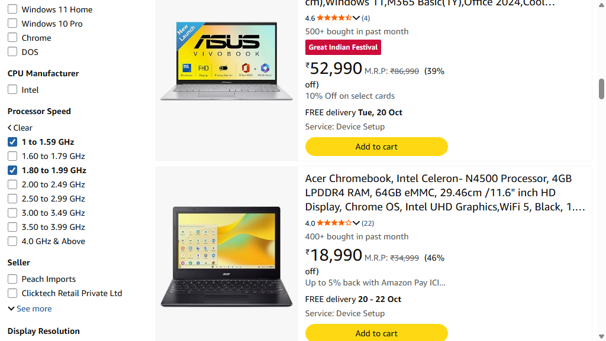
Info 8:07:24 PM 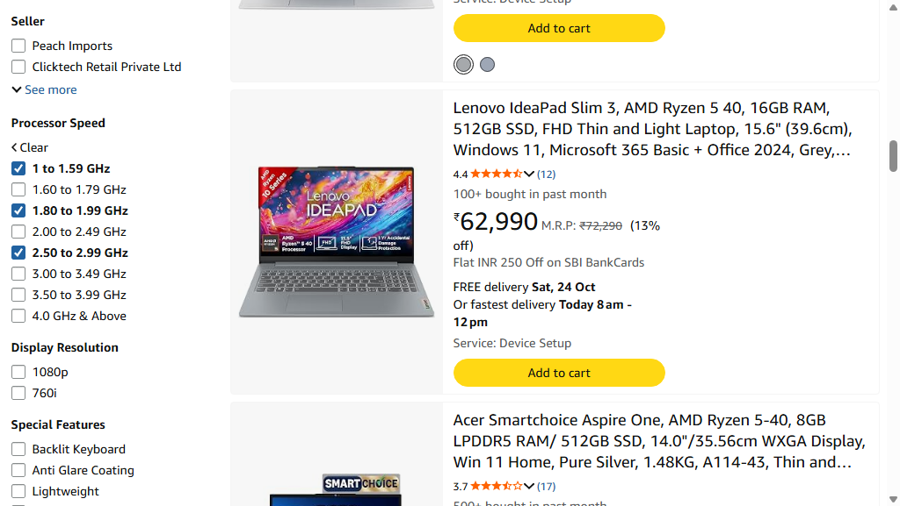
Info 8:07:24 PM 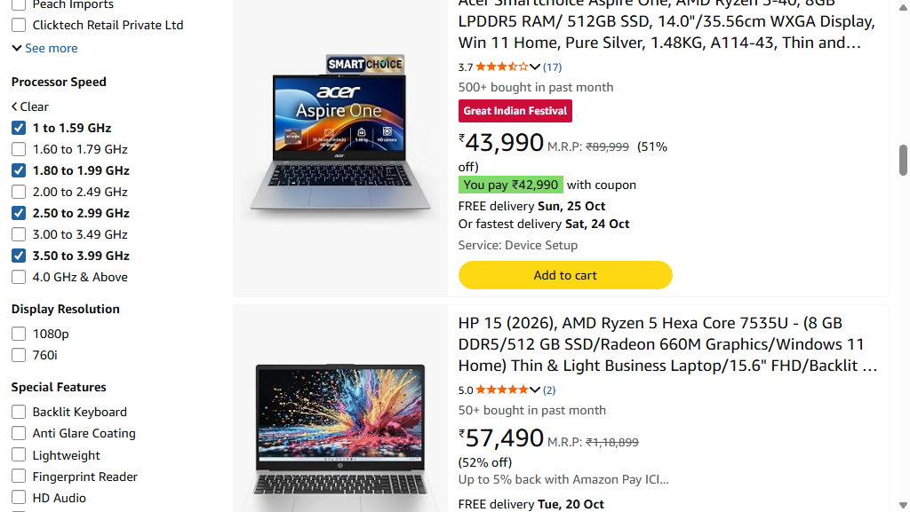
Info 8:07:24 PM 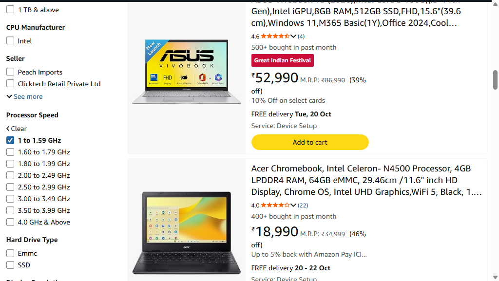
-
verifyingBatteryCapacityFilterFunctionality_Tablet_19-55-33
7:55:35 PM / 00:00:05:670 Pass
verifyingBatteryCapacityFilterFunctionality_Tablet_19-55-33
10.17.2026 7:55:35 PM 10.17.2026 7:55:40 PM 00:00:05:670 · #test-id=6Status Timestamp Details Info 7:55:35 PM Test Input Parameter: Tablet Pass 7:55:40 PM Test Passed Info 7:55:40 PM 📂 Logs: Info 7:55:40 PM 📄 verifyingBatteryCapacityFilterFunctionality_Tablet_19-55-33.log -
verifyingStorageCapacityFilterFunctionality_Mobile_19-55-41
7:55:43 PM / 00:04:46:460 Fail
verifyingStorageCapacityFilterFunctionality_Mobile_19-55-41
10.17.2026 7:55:43 PM 10.17.2026 8:00:29 PM 00:04:46:460 · #test-id=7Status Timestamp Details Info 7:55:43 PM Test Input Parameter: Mobile Fail 8:00:29 PM Info 8:00:29 PM 📂 Logs: Info 8:00:29 PM 📄 verifyingStorageCapacityFilterFunctionality_Mobile_19-55-41.log Info 8:00:29 PM 📸 Screenshots: Info 8:00:29 PM 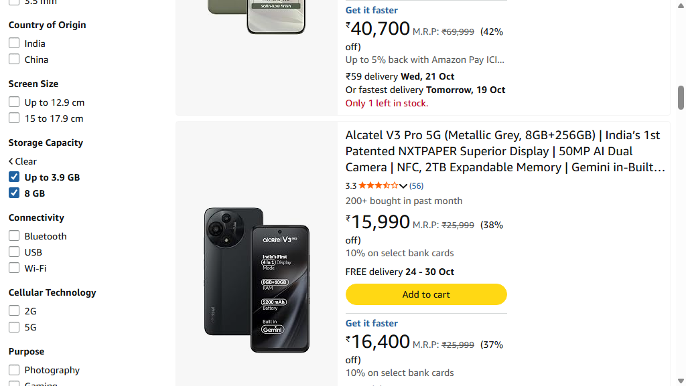
Info 8:00:29 PM 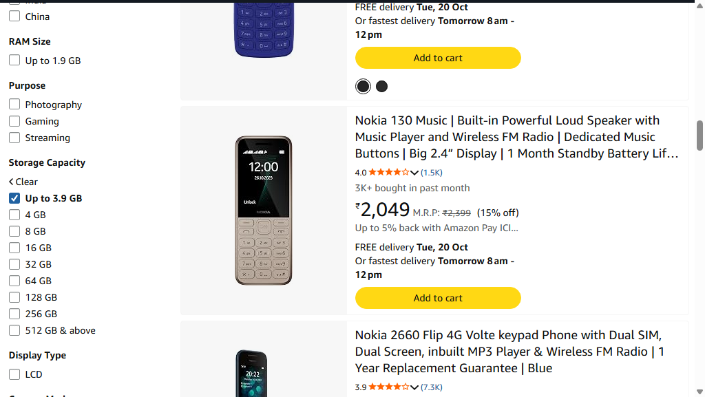
-
verifyingDiscountFilterFunctionality_Laptop_19-56-05
7:56:07 PM / 00:15:37:691 Fail
verifyingDiscountFilterFunctionality_Laptop_19-56-05
10.17.2026 7:56:07 PM 10.17.2026 8:11:45 PM 00:15:37:691 · #test-id=8Status Timestamp Details Info 7:56:07 PM Test Input Parameter: Laptop Fail 8:11:45 PM Info 8:11:45 PM 📂 Logs: Info 8:11:45 PM 📄 verifyingDiscountFilterFunctionality_Laptop_19-56-05.log Info 8:11:45 PM 📸 Screenshots: Info 8:11:45 PM 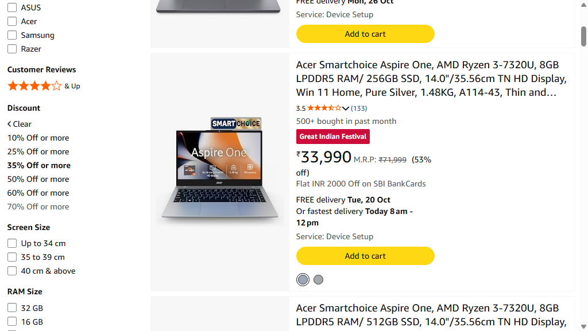
Info 8:11:45 PM 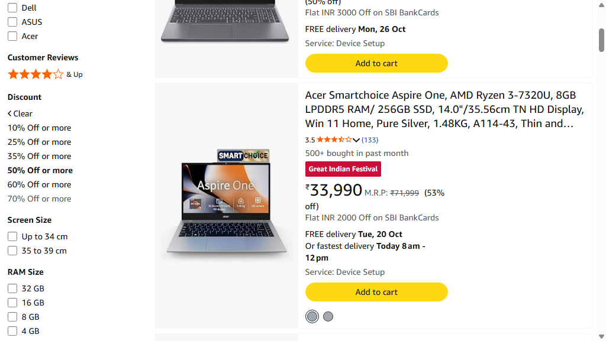
Info 8:11:45 PM 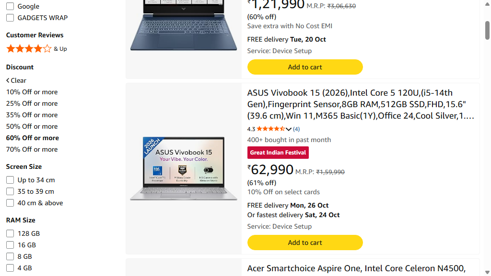
Info 8:11:45 PM 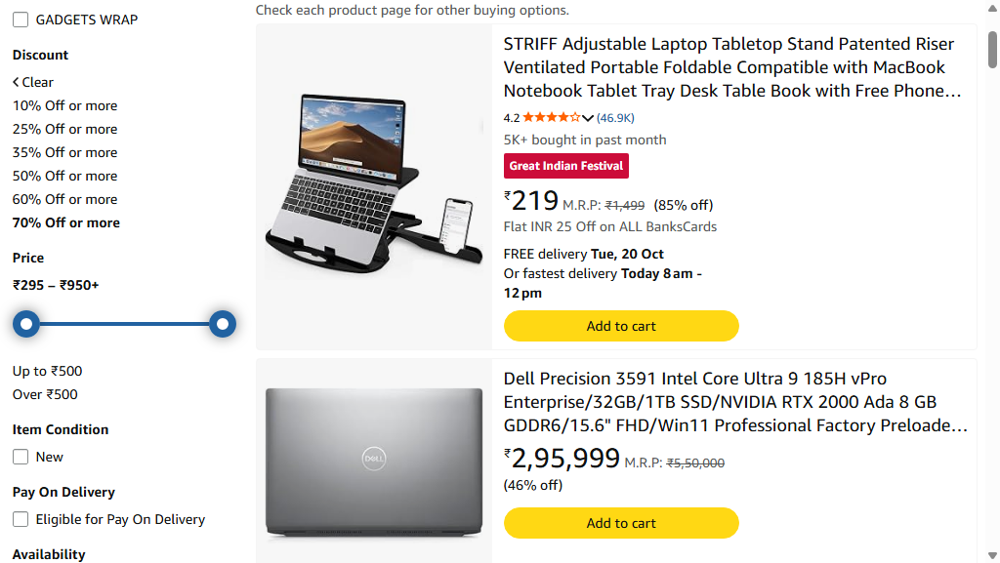
Info 8:11:45 PM 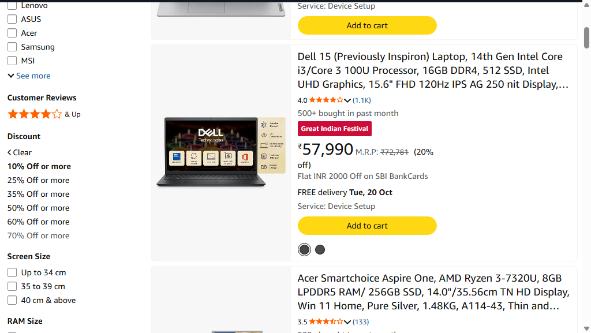
-
verifyingStorageCapacityFilterFunctionality_Laptop_20-00-31
8:00:33 PM / 00:00:04:741 Pass
verifyingStorageCapacityFilterFunctionality_Laptop_20-00-31
10.17.2026 8:00:33 PM 10.17.2026 8:00:37 PM 00:00:04:741 · #test-id=9Status Timestamp Details Info 8:00:33 PM Test Input Parameter: Laptop Pass 8:00:37 PM Test Passed Info 8:00:37 PM 📂 Logs: Info 8:00:37 PM 📄 verifyingStorageCapacityFilterFunctionality_Laptop_20-00-31.log -
verifyingStorageCapacityFilterFunctionality_Tablet_20-00-38
8:00:39 PM / 00:04:51:536 Fail
verifyingStorageCapacityFilterFunctionality_Tablet_20-00-38
10.17.2026 8:00:39 PM 10.17.2026 8:05:31 PM 00:04:51:536 · #test-id=10Status Timestamp Details Info 8:00:39 PM Test Input Parameter: Tablet Fail 8:05:31 PM Info 8:05:31 PM 📂 Logs: Info 8:05:31 PM 📄 verifyingStorageCapacityFilterFunctionality_Tablet_20-00-38.log Info 8:05:31 PM 📸 Screenshots: Info 8:05:31 PM 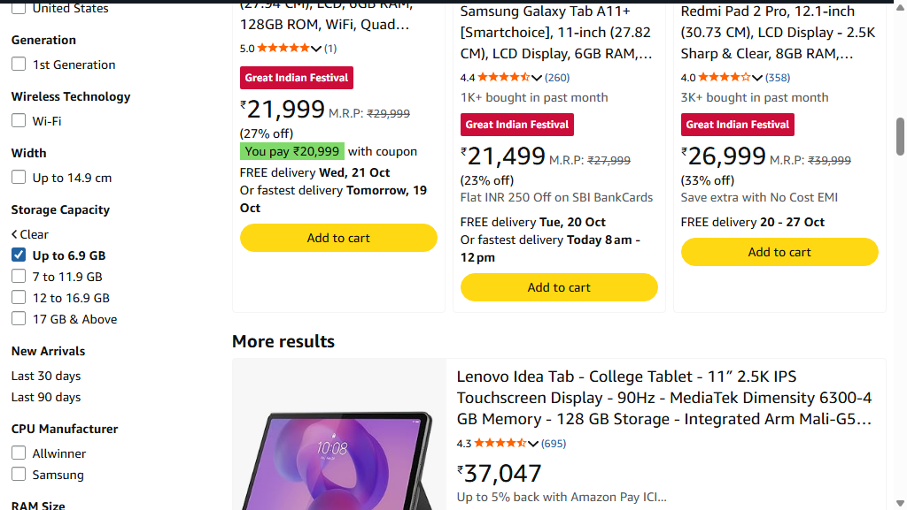
Info 8:05:31 PM 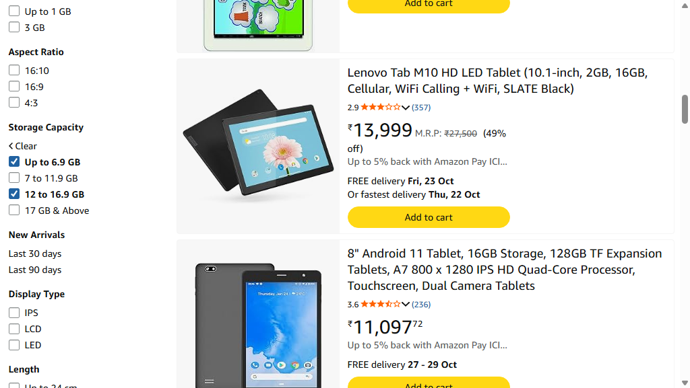
-
verifyingProcessorSpeedFilterFunctionality_Tablet_20-07-24
8:07:26 PM / 00:00:05:790 Pass
verifyingProcessorSpeedFilterFunctionality_Tablet_20-07-24
10.17.2026 8:07:26 PM 10.17.2026 8:07:32 PM 00:00:05:790 · #test-id=11Status Timestamp Details Info 8:07:26 PM Test Input Parameter: Tablet Pass 8:07:32 PM Test Passed Info 8:07:32 PM 📂 Logs: Info 8:07:32 PM 📄 verifyingProcessorSpeedFilterFunctionality_Tablet_20-07-24.log -
verifyingDiscountFilterFunctionality_Tablet_20-11-47
8:11:49 PM / 00:11:04:146 Fail
verifyingDiscountFilterFunctionality_Tablet_20-11-47
10.17.2026 8:11:49 PM 10.17.2026 8:22:53 PM 00:11:04:146 · #test-id=12Status Timestamp Details Info 8:11:49 PM Test Input Parameter: Tablet Fail 8:22:53 PM Info 8:22:53 PM 📂 Logs: Info 8:22:53 PM 📄 verifyingDiscountFilterFunctionality_Tablet_20-11-47.log Info 8:22:53 PM 📸 Screenshots: Info 8:22:53 PM 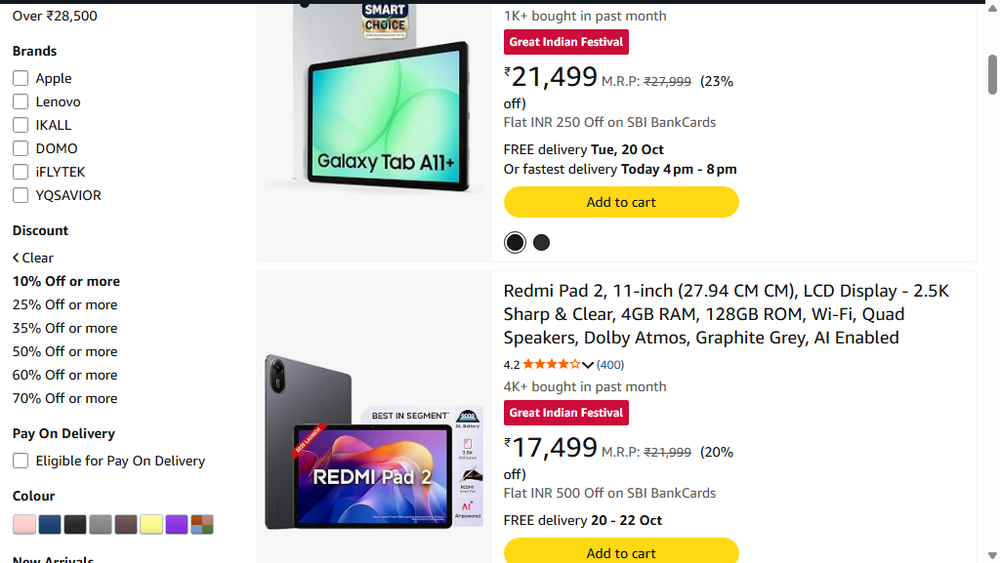
Info 8:22:53 PM 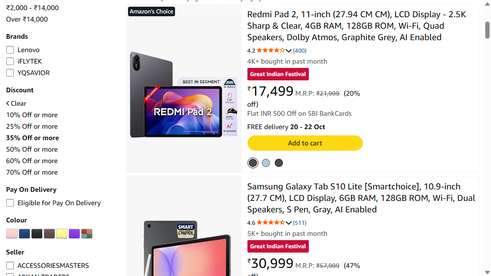
Info 8:22:53 PM 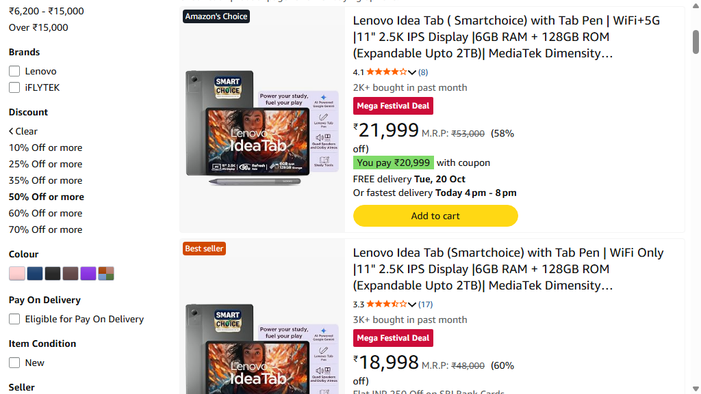
Info 8:22:53 PM Info 8:22:53 PM 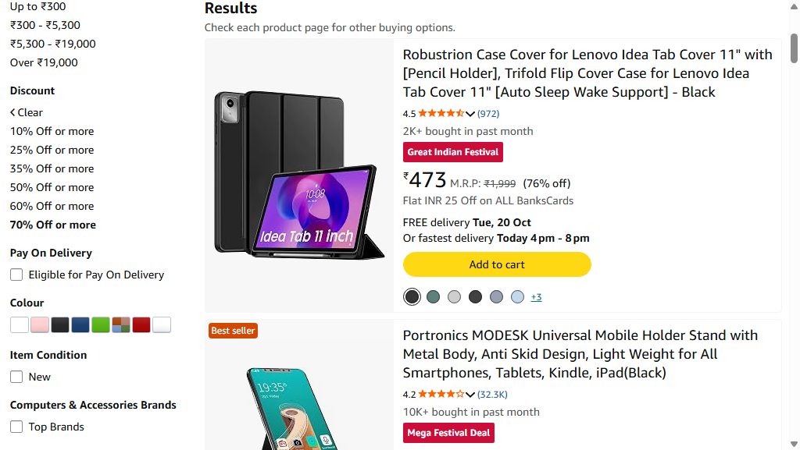
-
java.lang.AssertionError
8 tests
java.lang.AssertionError
8 failedStatus Timestamp TestName Fail 19:44:33 PM verifyingBatteryCapacityFilterFunctionality_Mobile_19-44-20 Fail 19:44:33 PM verifyingProcessorSpeedFilterFunctionality_Mobile_19-44-20 Fail 19:44:34 PM verifyingDiscountFilterFunctionality_Mobile_19-44-20 Fail 19:55:43 PM verifyingStorageCapacityFilterFunctionality_Mobile_19-55-41 Fail 20:00:39 PM verifyingStorageCapacityFilterFunctionality_Tablet_20-00-38 Fail 19:55:24 PM verifyingProcessorSpeedFilterFunctionality_Laptop_19-55-22 Fail 19:56:07 PM verifyingDiscountFilterFunctionality_Laptop_19-56-05 Fail 20:11:49 PM verifyingDiscountFilterFunctionality_Tablet_20-11-47
Started
Oct 17, 2026 07:44:19 PM
Ended
Oct 17, 2026 08:22:53 PM
Tests Passed
4
Tests Failed
8
Tests
Log events
Timeline